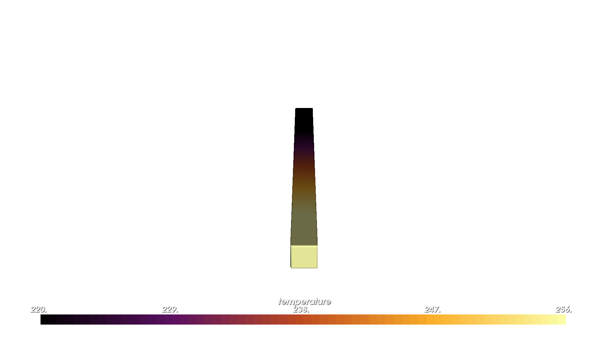
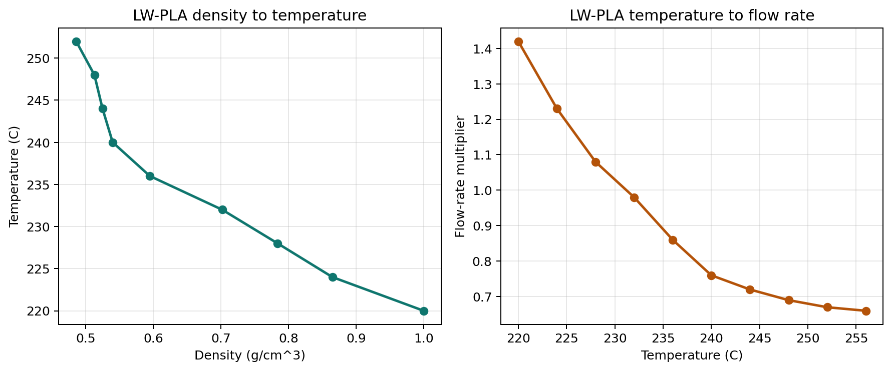
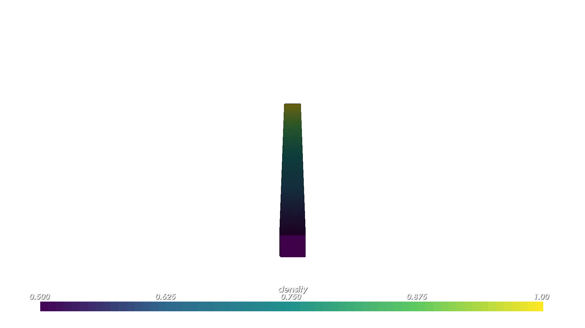
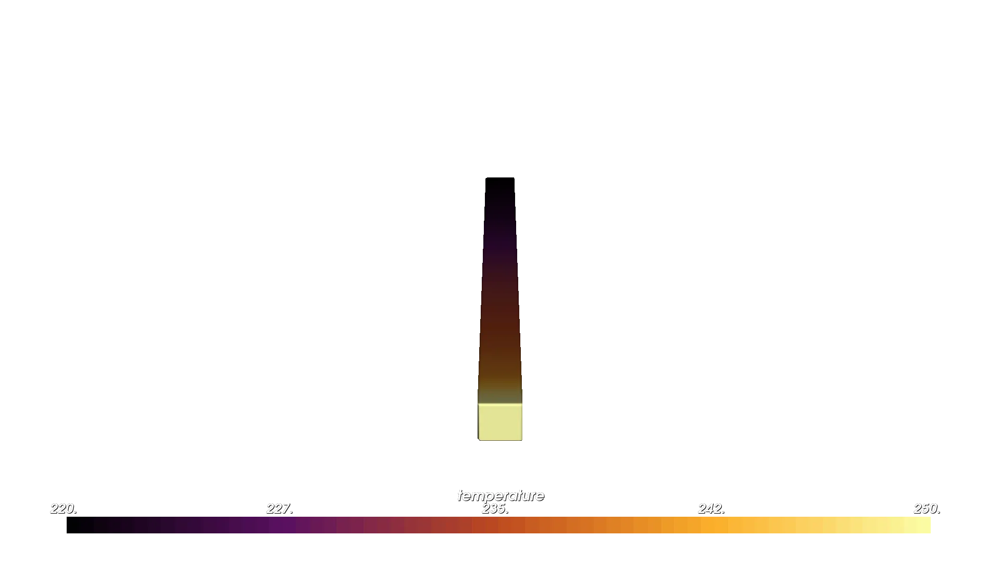
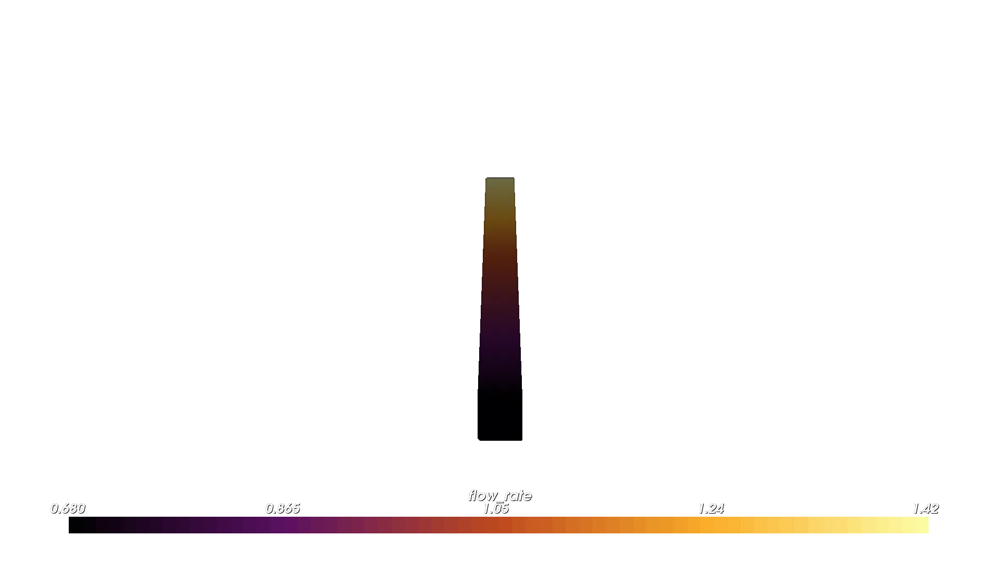
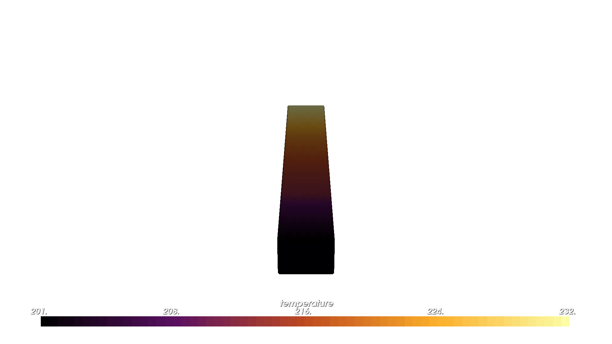
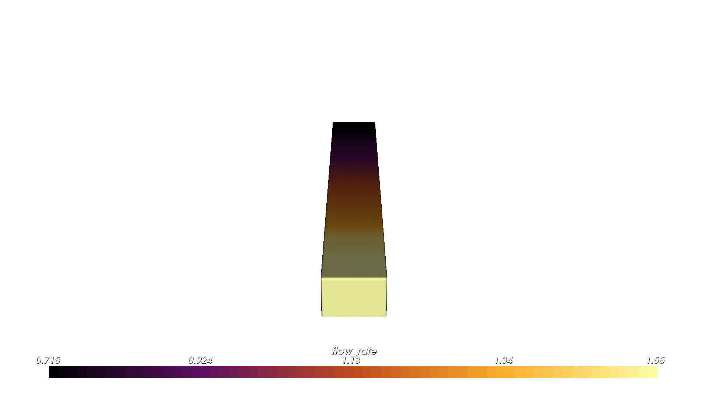

Attribute Modifier and Resolver Guide#
This guide shows how to use pv.AttributeModifier and pyvcad_attribute_resolver to convert one attribute field into another. The core idea is that OpenVCAD designs often begin with a design-intent attribute such as DENSITY or SHORE_HARDNESS, while downstream compiler workflows may need a different attribute such as TEMPERATURE or FLOW_RATE.
AttributeModifier is the direct tool for that job. The resolver sits one level above it and automates the same wrapping pattern when a conversion chain is already registered. It assumes you already know how to create OpenVCAD geometry, attach attributes, and build gradients from the Getting Started and Functional grading guides.
All runnable scripts for this guide live in examples/3_attribute_resolver/.
Lesson 1: Manual Conversion with AttributeModifier#
pv.AttributeModifier is the core OpenVCAD tool for attribute-to-attribute conversion. It wraps a child node and uses a converter to produce one or more new attributes from the attributes already present on that child.
This exists because many workflows need a second attribute that is derived from the first one rather than modeled directly. A design might carry the field you want to reason about physically, while the next stage in the workflow needs a different field that is easier to render, simulate, or compile.
For example:
a measured or designed
DENSITYfield may need to becomeTEMPERATUREa
TEMPERATUREfield may need to becomeFLOW_RATE
This is the right tool when:
you already know the exact conversion you want
you have one local conversion step to apply (you can chain them if you want to have multiple computed attributes)
you want to inspect or prototype a lookup table directly
In practice, using an AttributeModifier means:
attach one or more input attributes to a design
build a converter such as
LookupTableConverterorExpressionConverterwrap the design in
pv.AttributeModifier(converter, child)
The example below uses the foaming PLA flow-compensation data directly. A temperature gradient is attached to a bar, then a LookupTableConverter turns that temperature into FLOW_RATE.
import pyvcad as pv
import pyvcad_rendering as viz
# Manual LW-PLA flow compensation using a single AttributeModifier.
bar_length = 180.0
bar_width = 12.0
bar_height = 12.0
temperature_expr = "max(min((x/3 + 236), 256), 220)"
foaming_pla_flow_compensation = [
(220, 1.42),
(224, 1.23),
(228, 1.08),
(232, 0.98),
(236, 0.86),
(240, 0.76),
(244, 0.72),
(248, 0.69),
(252, 0.67),
(256, 0.66),
]
flow_entries = [pv.LookupTableEntry(kv[0], kv[0], kv[1])
for kv in foaming_pla_flow_compensation]
flow_converter = pv.LookupTableConverter(
input_attributes=[pv.DefaultAttributes.TEMPERATURE],
output_attributes=[pv.DefaultAttributes.FLOW_RATE],
entries=flow_entries,
mode=pv.InterpolationMode.LINEAR,
)
bar = pv.RectPrism(pv.Vec3(0, 0, 0), pv.Vec3(bar_length, bar_width, bar_height))
bar.set_attribute(pv.DefaultAttributes.TEMPERATURE,
pv.FloatAttribute(temperature_expr))
root = pv.AttributeModifier(flow_converter, bar)
viz.Render(root)
Run it with:
python examples/3_attribute_resolver/01_attribute_modifier_flow_rate.py
Temperature field

Flow-rate field
This manual pattern works well, but it has an obvious downside: the user has to know the conversion data, build the converter, and explicitly wrap the tree in the right order.
The important thing to notice is that the original TEMPERATURE field still defines the design intent, while the new FLOW_RATE field is derived from it. That separation is exactly why AttributeModifier is useful: it lets you keep the input field that is meaningful for modeling, while layering on the output field required by the next workflow.
Why Add the Resolver#
The resolver removes the repetitive parts of that manual workflow.
Without it, each design has to answer these questions up front:
Which conversion data applies to this material?
What order should the conversions run in?
Which
AttributeModifiernodes need to be wrapped around the design?
pyvcad_attribute_resolver keeps a graph of registered conversions and solves for the shortest valid path to the attributes you ask for. In practice, that means you can keep modeling with design-intent attributes like DENSITY or SHORE_HARDNESS, then ask for downstream attributes such as TEMPERATURE and FLOW_RATE only when you need them.
The examples in this guide are simplified versions of the foaming-filament compensation workflow shown in examples/applications/foaming_filaments/compensation_demo/compensation_pla_demo.py.
How adapt() Works#
At the Python-user level, resolver.adapt(...) does four things:
It looks at the attributes already present on your design.
It searches the registered conversion graph for a valid path to each requested target.
It builds the required converters from the selected module data.
It wraps your tree in the needed
pv.AttributeModifiernodes for you.
That last point is the key connection to Lesson 1. The resolver does not replace AttributeModifier with a different mechanism. It automates the same wrapping pattern you would otherwise write by hand, which is why this is really a guide about both tools together.
For example, when you write:
root = resolver.adapt(bar, ["temperature", "flow_rate"], tags=["foaming_pla"])
the foaming PLA workflow behaves as if you had manually built:
one
AttributeModifierthat convertsdensity -> temperaturea second
AttributeModifierthat convertstemperature -> flow_rate
The advantage is that your design script only states the attribute you have and the attributes you want.
Lesson 2: Let the Resolver Handle a Known Path#
If your design already contains TEMPERATURE, the foaming PLA module can provide the TEMPERATURE -> FLOW_RATE step for you. Compared with Lesson 1, the lookup table and AttributeModifier are gone from the script.
import pyvcad as pv
import pyvcad_rendering as viz
import pyvcad_attribute_resolver as resolver
# The resolver replaces the manual lookup-table wiring from Lesson 1.
resolver.clear_conversions()
resolver.register_pla_conversions()
bar_length = 180.0
bar_width = 12.0
bar_height = 12.0
temperature_expr = "max(min((x/3 + 236), 256), 220)"
bar = pv.RectPrism(pv.Vec3(0, 0, 0), pv.Vec3(bar_length, bar_width, bar_height))
bar.set_attribute(pv.DefaultAttributes.TEMPERATURE,
pv.FloatAttribute(temperature_expr))
root = resolver.adapt(bar, ["flow_rate"], tags=["foaming_pla"])
viz.Render(root)
Run it with:
python examples/3_attribute_resolver/02_resolver_temperature_to_flow_rate.py
Flow-rate field

The important line is:
root = resolver.adapt(bar, ["flow_rate"], tags=["foaming_pla"])
It says:
use the current design tree as the starting point
make sure
flow_rateexists on the resultonly consider foaming PLA conversions while solving (we also have a
temperature->flow_ratepath that is for foaming TPU, so we need to distinguish)
Lesson 3: Start from Design Intent#
The resolver becomes more useful when your model starts with a design-intent field instead of a machine-facing one. In the next example, the bar only defines DENSITY. The resolver then derives both TEMPERATURE and FLOW_RATE using the built-in LW-PLA conversion chain.
TEMPERATUREandFLOW_RATEare both required by theSlicerProjectCompilerto print with foaming PLA or TPU. After compilation and slicing, the resulting g-code that is sent to the printer grades temperature and flow rates to ensure the right foaming rate and extrusion properties.
import pyvcad as pv
import pyvcad_rendering as viz
import pyvcad_attribute_resolver as resolver
# Start from design intent (density) and let the resolver derive the
# machine-facing attributes needed by the foaming PLA workflow.
resolver.register_pla_conversions()
bar_length = 180.0
bar_width = 12.0
bar_height = 12.0
density_min = 0.50
density_max = 1.00
density_slope = (density_min - density_max) / bar_length
density_offset = (density_min + density_max) / 2.0
density_expr = (
f"max(min({density_slope:.8f} * x + {density_offset:.8f}, "
f"{density_max:.8f}), {density_min:.8f})"
)
bar = pv.RectPrism(pv.Vec3(0, 0, 0), pv.Vec3(bar_length, bar_width, bar_height))
bar.set_attribute(pv.DefaultAttributes.DENSITY, pv.FloatAttribute(density_expr))
root = resolver.adapt(bar, ["temperature", "flow_rate"], tags=["foaming_pla"])
viz.Render(root)
Run it with:
python examples/3_attribute_resolver/03_resolver_density_to_flow_rate.py
The built-in LW-PLA module carries two datasets:
density -> temperaturetemperature -> flow_rate
This data is provided in under
resolver/src/pyvcad_attribute_resolver/modules/foaming/data.pyin the repo.
Built-in LW-PLA conversion curves

Design intent (density)

Resolved temperature

Resolved flow rate

This is the main reason to use the resolver: the design can stay focused on the attribute you actually want to control, while the machine-facing attributes are derived later from registered material knowledge.
Practical Notes#
adapt()only adds targets that are missing. If your design already hastemperature, asking for["temperature", "flow_rate"]leaves the existingtemperaturefield in place and only resolvesflow_rate.Ask for all downstream attributes you need in one call. For example,
["temperature", "flow_rate"]lets the resolvedtemperaturebecome available immediately forflow_rate.If no path exists, the resolver raises
NoPathError.If multiple equal paths remain after filtering, the resolver raises
AmbiguousPathError.For custom module authoring and lower-level registration details, see
resolver/README.mdin the source tree.
Cross-compilation#
Traditional cross-compilers take one source program and retarget it for multiple machines. The attribute resolver supports the same way of thinking: your OpenVCAD model can carry one design-intent field, then different resolver modules can compile that field into the machine-facing attributes required by different fabrication backends.
In this guide, the shared source language is shore_hardness.
The foaming TPU workflow targets
SlicerProjectCompiler, which needstemperatureandflow_rate.The J750 workflow targets
MaterialInkjetCompiler, which needsvolume_fractions.
This is where model bounds matter. The two registered target models do not cover the same domain:
Foaming TPU:
61.5A -> 92.5AJ750:
30A -> 100A
To keep the same design valid for both targets without clamping, the example below uses a shared 62A -> 92A shore-hardness gradient. That range sits safely inside both models, so both compilations are genuinely using their learned conversions instead of flattening at the ends.
The full runnable demo lives in:
python examples/3_attribute_resolver/04_cross_compilation_shore_hardness.py
It writes:
examples/3_attribute_resolver/output/cross_compilation_shore_hardness_tpu.3mfexamples/3_attribute_resolver/output/cross_compilation_shore_hardness_j750_slices/
import os
import shutil
import pyvcad as pv
import pyvcad_attribute_resolver as resolver
import pyvcad_compilers as pvc
import pyvcad_rendering as viz
materials = pv.j750_materials
bar_length = 100.0
bar_width = 14.0
bar_height = 10.0
# Use the overlap between the two target models so the same design-intent field
# can be compiled without clamping on either backend.
shore_min = 62.0
shore_max = 92.0
shore_span = shore_max - shore_min
shore_expr = (
f"max(min(({shore_span:.8f} * (x + {bar_length / 2.0:.8f}) / {bar_length:.8f}) + "
f"{shore_min:.8f}, {shore_max:.8f}), {shore_min:.8f})"
)
def make_shore_hardness_bar():
bar = pv.RectPrism(pv.Vec3(0.0, 0.0, 0.0), pv.Vec3(bar_length, bar_width, bar_height))
bar.set_attribute(
pv.DefaultAttributes.SHORE_HARDNESS,
pv.FloatAttribute(shore_expr),
)
return bar
# Target 1: foaming TPU on filament hardware -> temperature + flow_rate
resolver.clear_conversions()
resolver.register_tpu_conversions()
slicer_root = resolver.adapt(
make_shore_hardness_bar(),
["temperature", "flow_rate"],
tags=["foaming_tpu"],
)
# Target 2: J750 inkjet hardware -> volume fractions
resolver.clear_conversions()
resolver.register_j750_shore_hardness_conversions(
material_defs=materials,
agilus_material="Agilus30Mgn",
vero_material="VeroYellow",
)
inkjet_root = resolver.adapt(
make_shore_hardness_bar(),
["volume_fractions"],
tags=["j750_shore_hardness"],
)
root = slicer_root
viz.Render(root)
_here = os.path.dirname(os.path.abspath(__file__))
output_dir = os.path.join(_here, "output")
os.makedirs(output_dir, exist_ok=True)
profiles_dir = os.path.normpath(
os.path.join(_here, "..", "applications", "foaming_filaments", "profiles")
)
printer_profile_path = os.path.join(profiles_dir, "prusa_mk4s_profile.ini")
filament_profile_path = os.path.join(profiles_dir, "ColorFabb_VarioShore_TPU.ini")
slicer_output_path = os.path.join(output_dir, "cross_compilation_shore_hardness_tpu.3mf")
slicer_compiler = pvc.SlicerProjectCompiler(
slicer_root,
pv.Vec3(0.25, 0.25, 0.25),
slicer_output_path,
10,
printer_profile_path,
filament_profile_path,
)
slicer_compiler.compile()
inkjet_output_dir = os.path.join(output_dir, "cross_compilation_shore_hardness_j750_slices")
if os.path.isdir(inkjet_output_dir):
shutil.rmtree(inkjet_output_dir)
os.makedirs(inkjet_output_dir, exist_ok=True)
inkjet_compiler = pvc.MaterialInkjetCompiler(
inkjet_root,
pv.Vec3(0.15, 0.15, 0.15),
inkjet_output_dir,
"slice_",
materials,
0.0,
)
inkjet_compiler.compile()
The important idea is that the design-intent field stays the same, while the requested target attributes change with the backend:
shore_hardness -> temperature -> flow_ratefor foaming TPU filament printingshore_hardness -> volume_fractionsfor J750 inkjet slicing
That is the same source model being cross-compiled to two different target machines.
Shared source field: shore hardness

Foaming TPU target: temperature

Foaming TPU target: flow rate

J750 target: volume fractions

For that J750 volume-fractions render, we disable blending to see the actual voxels of material. The underlying compiled attribute is still continuous, but turning blending off makes the representative Agilus/Vero color shift easier to see. The relative distribution of yellow and magenta is changing based on the shore hardness.
If you widened that same source gradient beyond the shared overlap, the two target backends would stop agreeing on the active design space. The foaming TPU path would start clamping first, while the J750 path would keep producing new material mixes. Thinking in terms of compiler targets makes that tradeoff easier to reason about: one source language, multiple backends, different valid target ranges.